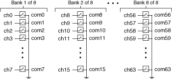
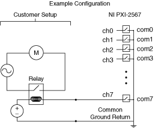
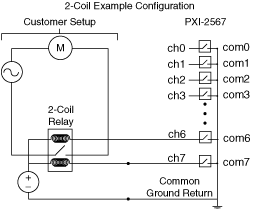
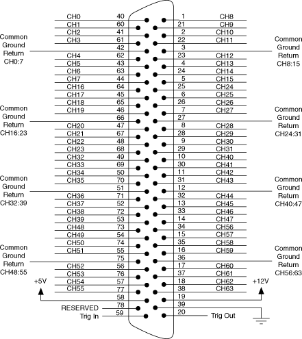

The following figure is a representation of the NI PXI-2567 topology.

To drive your relay, use the niSwitch Connect Channels VI or the niSwitch_Connect function.
For example, to actuate a relay connected to channel 7, you can connect the positive terminal of your voltage source to one side of the relay coil, and connect the other relay coil terminal to pin 44 of the front connector. Then connect the negative terminal of your voltage source to the common ground return of channel 7 (pin 42). Closing the channel 7 driver completes the circuit, driving your relay. The following figure illustrates how to actuate a relay connected to channel 7.

To close the channel 7 relay, call niSwitch_Connect(vi, "ch7", "com7").
Alternatively, you can open and close relays by calling the niSwitch Relay Control VI or the niSwitch_RelayControl function. For the relay name, enter K0 for channel 0, K1 for channel 1, and so on.
When scanning the NI PXI-2567, a typical scan list entry could be ch2->com2;. This entry drives the relay connected to channel 2.
The following figure shows an example of a configuration using the NI PXI-2567 to drive a 2-coil relay.

To close the relay in this example, you would call niSwitch_Connect(vi, "ch7", "com7"). To open the relay, then you would call niSwitch_Disconnect(vi, "ch7", "com7") and then niSwitch_Connect(vi, "ch6", "com6").
Alternatively, you can actuate the relay by calling the niSwitch Relay Control VI or the niSwitch_RelayControl function. To close the relay in this example, you would call niSwitch_RelayControl(vi, K7, NISWITCH_VAL_CLOSE_RELAY) to power on the lower coil in the diagram. Then call niSwitch_RelayControl(vi, K7, NISWITCH_VAL_OPEN_RELAY) to power off the lower coil, and call niSwitch_RelayControl(vi, K6, NISWITCH_VAL_CLOSE_RELAY) power on the other coil and open the relay.
The following figure identifies the pins for the NI PXI-2567.

|
Caution Do not connect to RESERVED pins. |